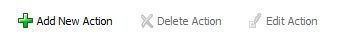
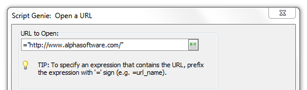

Open a URL
The Open a URL action launches the user's
browser and opens the specified URL. To add this action go to the
Control Panel and click on the
Code tab. Click the
New button in the toolbar, and then
select Script (using Action
Scripting) from the dropdown. The Code Editor will open.
Click the Add New Action button

The Select
Action dialog will load. In the
Category list scroll down to the
Miscellaneous category. From the Action list on the right
select Open a URL. This will load
the Script Genie for Open a URL.
|
Procedure
In the URL
to Open field enter either a URL or an expression that evaluates
to a URL. Note that the expression must begin with an equal sign "="
and must be quoted.

Click Next >.
Optionally modify
the comment that describes the action.
-
Click Finish.
See Also
SYS_OPEN(), Display an Xdialog Box